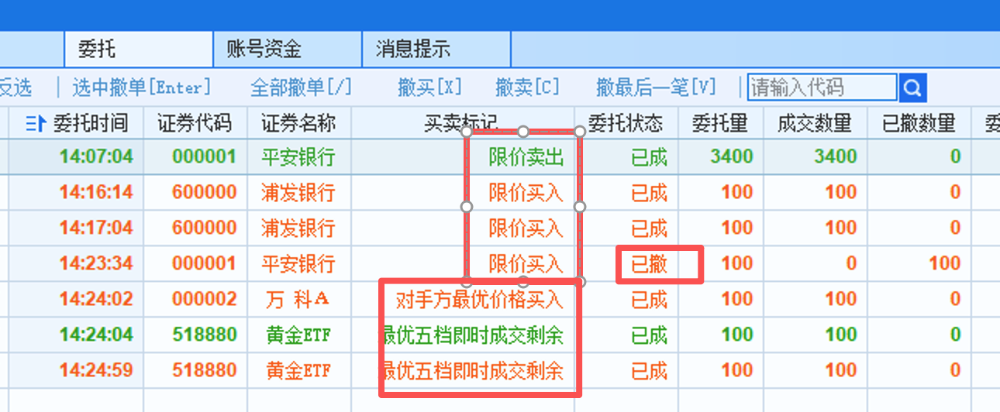
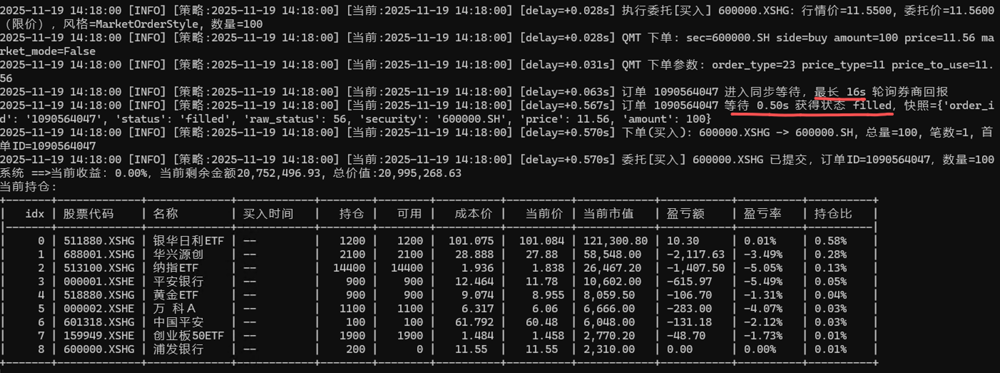
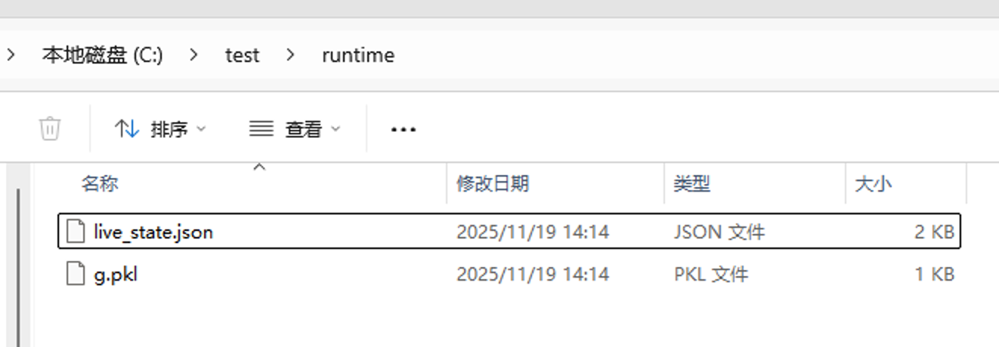
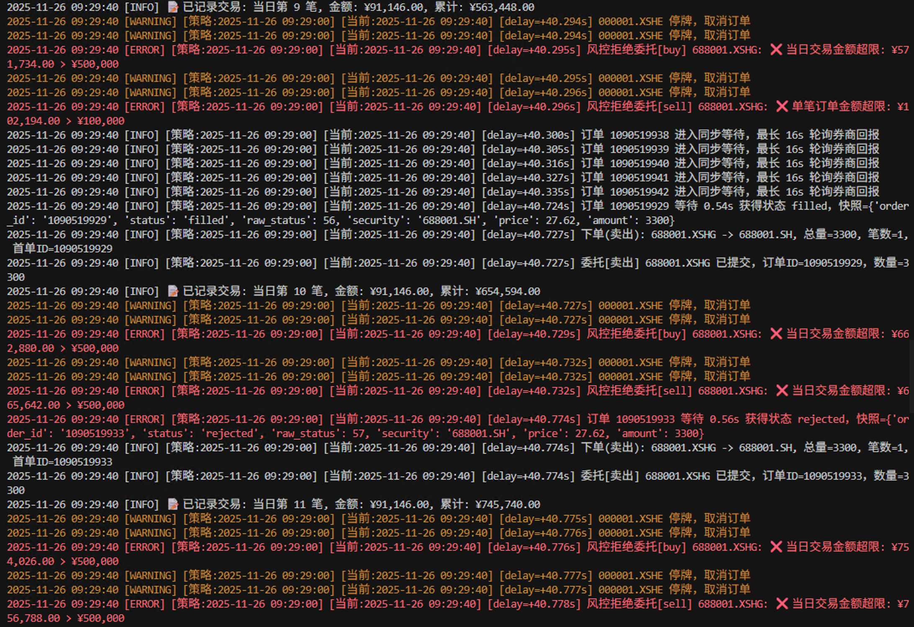

实盘引擎¶
本页涵盖本地 QMT/模拟与远程 qmt-remote 两种运行方式，聚焦最小可用流程与关键截图。
生命周期流程¶
┌─────────────────────────────────────────────────────────────────────────────┐
│ bullet-trade live strategy.py --broker qmt │
└───────────────────────────────────┬─────────────────────────────────────────┘
│
▼
┌─────────────────────────────────────────────────────────────────────────────┐
│ 1. 启动阶段 │
│ │
│ ┌──────────────┐ ┌──────────────┐ ┌──────────────┐ │
│ │ 加载策略文件 │ → │ 检查运行态 │ → │ 首次启动? │ │
│ │ strategy.py │ │ g.pkl 存在? │ │ │ │
│ └──────────────┘ └──────────────┘ └──────┬───────┘ │
│ │ │
│ ┌──────────────────────┴─────────────────────┐ │
│ │ │ │
│ ▼ ▼ │
│ ┌──────────────────┐ ┌──────────────┐ │
│ │ 是：调用 │ │ 否：恢复状态 │ │
│ │ initialize() │ │ 跳过init │ │
│ └────────┬─────────┘ └──────┬───────┘ │
│ │ │ │
│ └──────────────┬───────────────────────┘ │
│ ▼ │
│ ┌──────────────────────────┐ │
│ │ 代码变更? │ │
│ │ (hash对比) │ │
│ └────────────┬─────────────┘ │
│ │ 是 │
│ ▼ │
│ ┌──────────────────────────┐ │
│ │ after_code_changed() │ │
│ │ 热更新回调 │ │
│ └────────────┬─────────────┘ │
│ ▼ │
│ ┌──────────────┐ ┌──────────────┐ │
│ │ 初始化券商 │ → │process_ │ │
│ │ Broker连接 │ │initialize() │ │
│ └──────────────┘ └──────────────┘ │
├─────────────────────────────────────────────────────────────────────────────┤
│ 2. 运行循环（持续运行，每日重复） │
│ │
│ ┌───────────────────────────────────────────────────────────────────┐ │
│ │ 每个交易日 │ │
│ │ │ │
│ │ 09:15 ───────────────────────────────────────────────────────── │ │
│ │ │ │ │
│ │ ▼ before_trading_start() 盘前准备 │ │
│ │ │ │
│ │ 09:30 ───────────────────────────────────────────────────────── │ │
│ │ │ │ │
│ │ ▼ MarketOpenEvent 开盘事件 │ │
│ │ │ run_daily 定时任务开始执行 │ │
│ │ │ handle_data() / handle_tick() 触发 │ │
│ │ │ │ │
│ │ 11:30 ───────────────────────────────────────────────────────── │ │
│ │ │ 午休（自动跳过，不触发回调） │ │
│ │ 13:00 ───────────────────────────────────────────────────────── │ │
│ │ │ │ │
│ │ ▼ 继续执行 run_daily 定时任务 │ │
│ │ │ │
│ │ 15:00 ───────────────────────────────────────────────────────── │ │
│ │ │ │ │
│ │ ▼ MarketCloseEvent 收盘事件 │ │
│ │ │ after_trading_end() 盘后清理 │ │
│ │ │ 自动保存 g.pkl / live_state.json │ │
│ │ │ │ │
│ │ ────────── 等待下一个交易日 ────────── │ │
│ └───────────────────────────────────────────────────────────────────┘ │
├─────────────────────────────────────────────────────────────────────────────┤
│ 3. 退出阶段 │
│ ┌──────────────┐ ┌──────────────┐ ┌──────────────┐ │
│ │ Ctrl+C 终止 │ → │ 保存运行态 │ → │ 断开券商连接 │ │
│ │ 或异常退出 │ │ g.pkl │ │ 清理资源 │ │
│ └──────────────┘ └──────────────┘ └──────────────┘ │
└─────────────────────────────────────────────────────────────────────────────┘
生命周期回调说明¶
| 回调函数 | 触发时机 | 典型用途 |
|---|---|---|
initialize(context) |
首次启动时调用（运行态不存在） | 初始化策略参数、注册定时任务 |
process_initialize(context) |
每次进程启动后调用 | 恢复连接、重建缓存、检查状态 |
after_code_changed(context) |
检测到策略文件变更后调用 | 热更新逻辑、参数调整 |
before_trading_start(context) |
每日开盘前（09:15）调用 | 盘前数据准备、选股 |
handle_data(context, data) |
开盘时（09:30）调用一次 | 日级别交易逻辑 |
handle_tick(context, tick) |
收到 tick 推送时调用 | tick 级别交易逻辑 |
after_trading_end(context) |
每日收盘后（15:00）调用 | 盘后统计、发送通知 |
典型交易日时间线¶
时间 事件 说明
────────────────────────────────────────────────────────────────────────────
08:00 LiveEngine 启动 加载策略、恢复 g 状态
↓
09:15 BeforeTradingStartEvent 触发 before_trading_start()
before_trading_start() 盘前选股、数据准备
↓
09:25 集合竞价结束 可获取开盘价
↓
09:30 MarketOpenEvent 正式开盘
run_daily('09:30') 任务执行 定时任务触发
handle_data() 触发 日级别交易逻辑
↓
09:30-11:30 盘中交易时段 run_daily 任务按时触发
handle_tick() 持续触发 tick 推送
订单实时处理 委托、成交、撤单
↓
11:30-13:00 午休 自动跳过，不触发任何回调
↓
13:00-15:00 下午交易时段 与上午相同
↓
15:00 MarketCloseEvent 收盘
after_trading_end() 盘后统计、通知
自动保存 g.pkl 持久化策略状态
↓
15:00+ 收盘后 等待下一个交易日
可选：继续运行或退出
场景对比（先选路径）¶
| 场景 | 命令 | 必填变量 | 适合谁 |
|---|---|---|---|
| 本地 QMT | bullet-trade live ... --broker qmt |
QMT_DATA_PATH、QMT_ACCOUNT_ID |
已安装 QMT/xtquant，想直接盯盘 |
| 模拟券商 | --broker simulator |
无 | 风控演练/联调 |
| 远程 qmt-remote | --broker qmt-remote |
QMT_SERVER_HOST/PORT/TOKEN |
云/局域网托管，策略在本地 |
更多变量说明见 配置总览。
本地 QMT / 模拟最小步骤¶
cp env.live.example .env
# 核心变量（其余看 config.md）
DEFAULT_BROKER=qmt # 或 simulator
QMT_DATA_PATH=C:\国金QMT交易端\userdata_mini
QMT_ACCOUNT_ID=123456
LOG_DIR=logs
RUNTIME_DIR=runtime
bullet-trade live strategies/demo_strategy.py --broker qmt
--broker simulator dry-run，再切换真实账号。
命令行参数¶
bullet-trade live [-h] strategy_file --broker {qmt,qmt-remote,simulator}
[--log-dir LOG_DIR] [--runtime-dir RUNTIME_DIR]
| 参数 | 必填 | 说明 |
|---|---|---|
strategy_file |
✓ | 策略文件路径 |
--broker |
✓ | 券商类型：qmt、qmt-remote、simulator |
--log-dir |
日志目录（覆盖 .env 中的 LOG_DIR） | |
--runtime-dir |
运行态目录（覆盖 .env 中的 RUNTIME_DIR） |
实盘效果与日志¶
QMT 本机持仓/下单：

委托状态（限价/市价/撤单）：

同步下单日志（16s 队列 vs 0.5s 成交示例）：

运行态持久化目录（live_state.json、g.pkl）：

远程实盘（qmt-remote）¶
1) 远程 Windows 主机启动（需放行防火墙）：
bullet-trade server --listen 0.0.0.0 --port 58620 --token secret \
--enable-data --enable-broker \
--accounts main=123456:stock

2) 本地 .env：
DEFAULT_BROKER=qmt-remote
QMT_SERVER_HOST=10.0.0.8
QMT_SERVER_PORT=58620
QMT_SERVER_TOKEN=secret
QMT_SERVER_ACCOUNT_KEY=main
3) 运行策略：
bullet-trade live strategies/demo_strategy.py --broker qmt-remote
4) 服务端日志示例：

状态持久化¶
实盘引擎自动管理运行态，支持断点续跑：
runtime/
├── live_state.json # 引擎状态（当前日期、已执行任务等）
└── g.pkl # 策略全局变量 g 的序列化
持久化机制¶
| 时机 | 保存内容 |
|---|---|
| 每日收盘后 | 自动保存 g.pkl 和 live_state.json |
| 定时自动保存 | 可配置间隔（G_AUTOSAVE_INTERVAL） |
| 进程退出时 | 保存当前状态 |
状态恢复¶
重启后，引擎会：
1. 检测 g.pkl 是否存在
2. 存在则恢复 g 状态，跳过 initialize()
3. 调用 process_initialize() 让策略处理恢复逻辑
4. 对比策略文件 hash，变更则调用 after_code_changed()
安全与风控¶
.env不入库；远程服务务必带--token，必要时限制到内网。- 策略层保留风控钩子：停牌过滤、最大回撤、成交失败重试等。
- QMT server 更多参数见 QMT server。
- 若要让聚宽模拟盘接入远程实盘，请看 trade-support。
风控参数配置（.env）¶
| 变量 | 默认值 | 作用 |
|---|---|---|
MAX_ORDER_VALUE |
100000 |
单笔订单金额上限，超过即拒单。 |
MAX_DAILY_TRADE_VALUE |
500000 |
单日累计成交金额上限，超过即拒单。 |
MAX_DAILY_TRADES |
100 |
单日最大交易笔数，超过即拒单。 |
MAX_STOCK_COUNT |
20 |
持仓标的数上限（仅买入检查）。 |
MAX_POSITION_RATIO |
20 |
单标下单金额占总资产的最大比例。 |
STOP_LOSS_RATIO |
5 |
止损阈值，仅供 check_stop_loss 辅助判断。 |
RISK_CHECK_ENABLED |
false |
开启后台风控巡检。 |
提示：默认值偏宽，真实账户请按资金量收紧；先用
LIVE_MODE=dry_run验证风控配置，再切LIVE_MODE=live。
实盘风控情况：

常见问题¶
策略重启后状态丢失¶
检查 RUNTIME_DIR 配置是否正确，确保指向持久化目录。
定时任务没有触发¶
- 检查
run_daily的时间格式是否正确（如'10:00'） - 确认当前是交易时段
- 查看日志中是否有调度相关错误
订单没有成交¶
- 检查 QMT 客户端是否正常登录
- 查看风控日志是否拒单
- 确认标的是否停牌或涨跌停
远程连接失败¶
- 检查防火墙是否放行端口
- 确认
QMT_SERVER_HOST和QMT_SERVER_PORT配置正确 - 验证
QMT_SERVER_TOKEN与服务端一致